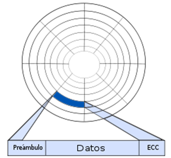
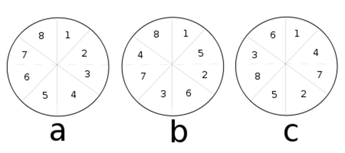
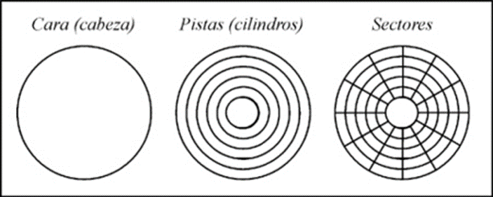
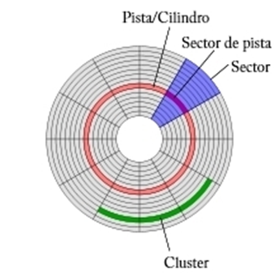

Formato físico (Formato de Bajo Nivel).
También llamado formato físico, es realizado mediante un software específico y consiste en colocar marcas en la superficie de óxido metálico magnetizable de Cromo o Níquel, para dividirlo en pistas concéntricas y éstas, a su vez, en sectores los cuales pueden ser luego referenciados indicando la cabeza lectora, el sector y cilindro que se desea leer. El tamaño estándar de cada sector es de 512 bytes.
Normalmente los discos duros vienen formateados de fábrica y nunca se pierde el formato por operaciones normales incluso si son defectuosas (aunque sí pueden perderse por campos magnéticos o altas temperaturas).
Actualmente los discos duros vienen con tecnología que no requiere formato a bajo nivel y en algunos casos el disco duro podría dañarse.
La estructura es la siguiente:

Pistas: varios miles de círculos concéntricos por cada plato del disco duro que pueden organizarse verticalmente en cilindros.
Sectores: varios cientos por pista. El tamaño individual suele ser de 512 bytes.
Preámbulo: que contiene bits que indican el principio del sector y a continuación el número de cilindro y sector.
Datos:
ECC: que contiene información de recuperación para errores de lectura. Este campo es variable y dependerá del fabricante.
La suma del tamaño de estos tres componentes del sector dará como resultado el tamaño del sectorizable en el disco, equivalente al espacio existente entre cada sector, el tamaño del preámbulo y del ECC. Esta pérdida es equivalente al 20% del espacio del disco. Por cuestiones publicitarias el espacio perdido suele anunciarse como espacio disponible para el almacenamiento de datos. Por ello, de un disco duro de 20 GB estarán disponibles 16 GB.
Limitación en la velocidad de lectura:
El formateado de bajo nivel impide una mayor velocidad en la lectura de datos, independientemente de la interfaz. Esta lectura se verá condicionada únicamente por la velocidad del disco (en rpm), la cantidad de sectores por pista y la cantidad de información por sector.
Intercalado de disco:
El buffer del disco será un factor fundamental y muy importante en la velocidad de lectura. Si un Buffer tiene una capacidad de almacenamiento de un sector, tras leer tal sector, deberá transmitir la información a la memoria principal; Este tiempo de transmisión será suficiente para que el sector contiguo se haya desplazado de la cabeza lectora y por tanto haya que esperar una nueva vuelta completa del disco para leer el sector. Una operación de lectura pierde cantidades despreciables de tiempo, pero que a grandes rasgos resultan en pérdidas de segundos o minutos. Para ello, se recurre al intercalado de disco, procedimiento consistente en numerar los clústeres de forma no contigua o separados entre sí, de manera que después de la transmisión de datos a la memoria principal no haya que esperar una rotación completa. El intercalado puede ser simple o doble, según la velocidad de transmisión de datos del buffer.

Donde a muestra sectores sin intercalado, b muestra sectores con intercalado simple y c muestra un intercalado doble.
Durante la operación de formato de bajo nivel se establecen las pistas y los sectores de cada plato, aquí se define el Numero de pistas y numero de sectores por pista.
Aunque el número de pistas de un disco este impuesto por su estructura física tal y como lo entrega el fabricante.
Es el que consiste en el dibujo magnético en cada cara del disco, así como el dibujo de caras, pistas o cilindros y sectores.
El número de pistas y el tamaño de sector dependen de la densidad del disco y por lo tanto de la capacidad.

- Cada disco puede tener una o dos caras (heads) según almacenen información en una o las dos superficies del disco. Los discos duros suelen tener varias caras, desde 4 hasta más de 20. Las caras de un disco se numeran comenzando por la 0.
- Cada cara se divide en círculos concéntricos llamados pistas (tracks) y cilindros (cilindres), cada una de las caras también se divide en varias pistas. Sin embargo, en los discos duros no se habla de pistas, sino de cilindros. Un cilindro designa el conjunto de todas las pistas con igual número, pero distinta cara. (un conjunto de pista perpendiculares forma un cilindro).
- Cada pista se divide en segmentos llamados sectores. El sector es la unidad mínima de información para los discos. Las pistas o tracks (cada pista a su vez se considera como un conjunto de segmentos llamados sectores o clúster). Cada cara de un plato tiene una pista 0, 1, 2,3... n pistas. Cada pista está geométricamente encima de su homóloga, en la cara opuesta de cada plato. Si nos ubicamos encima de una pista, geométricamente lo estamos haciendo sobre todas las pistas que tienen el mismo número a través de todas las caras y platos. Esa forma de ver las pistas se llama cilindro. Por tanto, un cilindro es el conjunto de pistas con la misma ubicación, pero en una cara distinta (Ejemplo: cilindro 3 = pista 3 de la cara 0 + pista 3 de la cara 1 + pista 3 de la cara 2, etc.).
Cuando el DOS lee o escribe información en un disco lo que está haciendo es leer o escribir uno o más sectores en el disco. Normalmente, todos los sectores de los discos duros tienen un tamaño de 512 bytes.
Un conjunto de cuatro sectores (como mínimo) forman un clúster, a un clúster se le conoce como racimo un racimo es el encadenamiento lógico de clúster de un archivo.
El número total de sectores de un disco duro se puede calcular:
nº sectores = nº caras * nº pistas/cara * nº sectores/pista.
Si cada sector almacena 512 bytes de información, la capacidad máxima de un disco duro seria: capacidad del disco duro= n° sectores * 512 bytes/sector
Se graba el sector de arranque en la pista cero y además se debe de cargar FAT (tabla de localización de archivos).
En la tabla donde esta almacenada toda la información referente a todos los sectores del disco, su contenido y estado (libre, ocupado, tamaño, etc.) además crea el directorio raíz que ocupa los sectores 6, 7, 8,9 de la pista cero, cara cero y los sectores 1, 2,3 de la pista cero de la cara uno se trata de una tabla de información referente a los archivos que contienen, por ejemplo, el nombre, la extensión, fecha, etc.
Posteriormente el resto del espacio del disco queda disponible para almacenar los datos y este espacio está organizado en clúster o grupos de sectores en HD, esta zona que es la más grande de los cuatro se almacenan los datos, programas y subdirectorios del disco, la unidad mínima que se pueda ocupar es la correspondiente aun clúster y no a un byte, la información que se puede pensar que se graba de manera de manera secuencial, uno detrás de otro de tal manera que nunca se pueden medir los clúster, pero si un archivo ya grabado en el disco aumenta de tamaño, esto obliga que los últimos datos introducidos en este archivo se graven a partir del último clúster ocupado esta forma de partir archivos dentro del disco se denomina fragmentación.